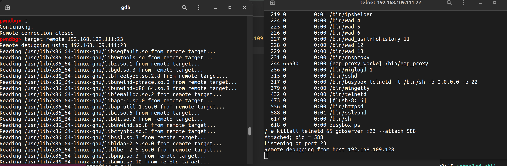

gdb-server配置
需要满足以获取 shell，未获取请参考利用VMware获取shell-进阶
- 下载 gdb-server static 版本，这里选择下载
gdbserver-7.10.1-x64
- 添加 gdb-server 到 rootfs 中并重打包
cp /path/to/gdbserver-7.10.1-x64 ./bin/gdbserver
chmod 777 ./bin/gdbserver
chroot . /sbin/ftar -cf bin.tar ./bin
rm -rf bin.tar.xz
chroot . /sbin/xz --check=sha256 -e bin.tar
find . -path './bin' -prune -o -print |cpio -H newc -o > ../make/rootfs.raw
cd ../make
cat rootfs.raw | gzip > rootfs.gz
- 启动 shell
注意我们能从外访问到内部的端口是有限的，建议用 ssh 22 端口和 telnet 的 23 端口
killall sshd && /bin/busybox telnetd -l /bin/sh -b 0.0.0.0 -p 22
默认 shell 是 22 端口 ,所以调试端口就用 23，使用 busybox ps -a 命令查看所有的进程 pid，确定 sslvpn 的 pid，接着并行执行两条命令附加调试
killall telnetd && gdbserver :23 --attach 1
接着用 gdb 远程连接即可
target remote 192.168.109.111:23
最后就可以开启愉快地调试之旅了！！！
